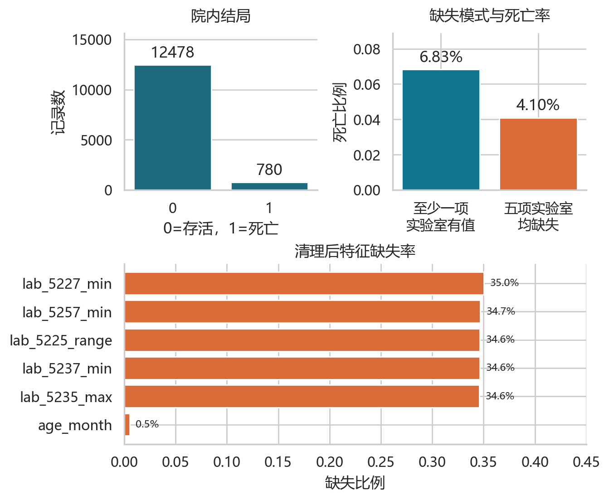
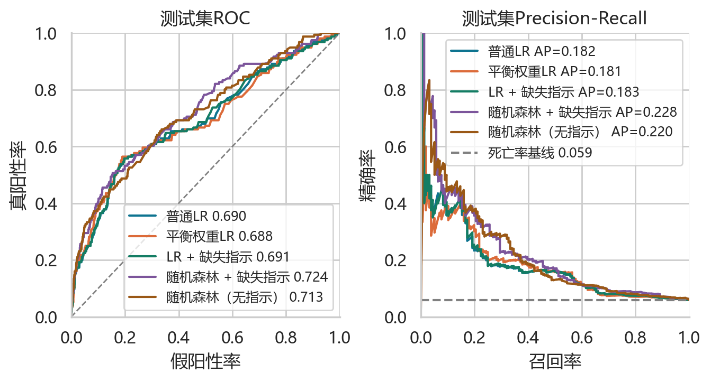
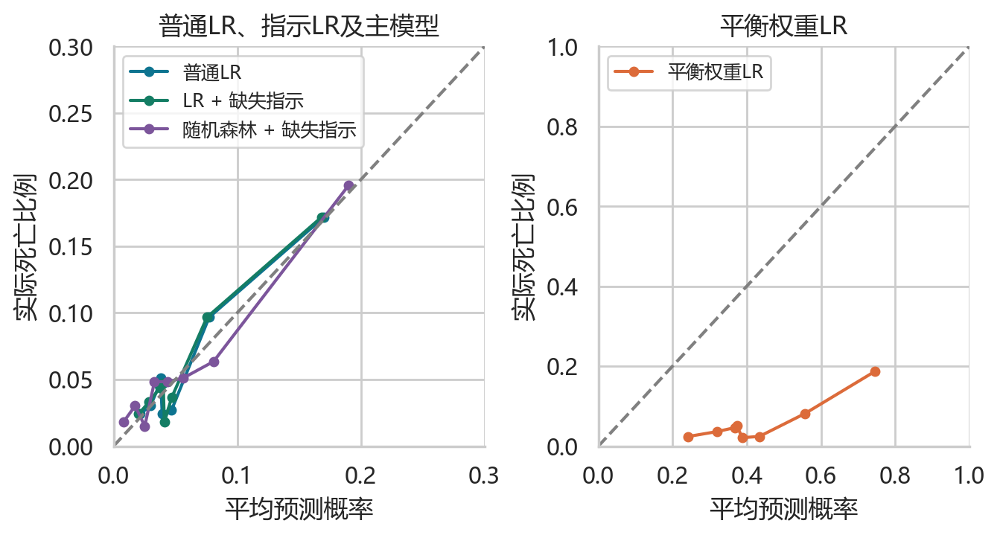
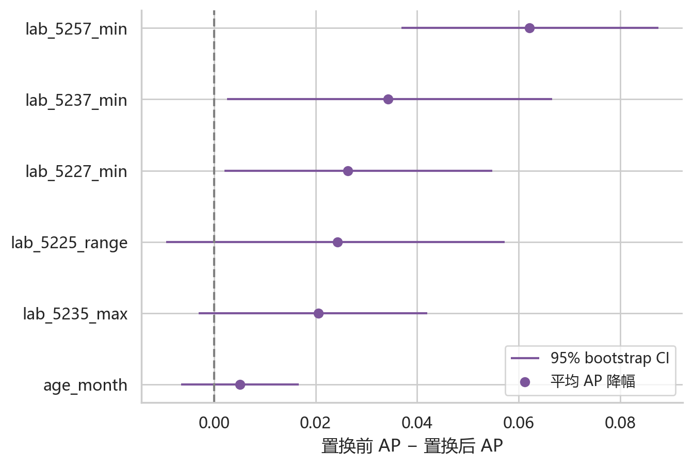
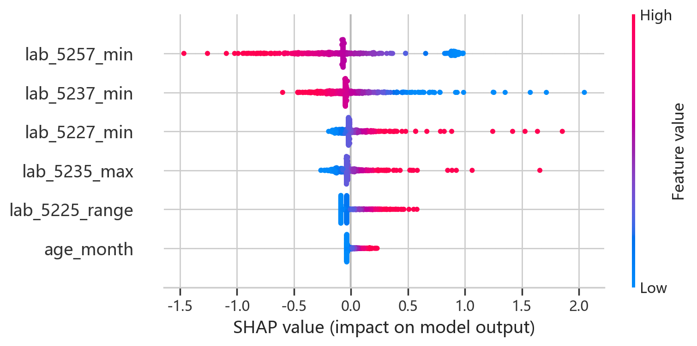
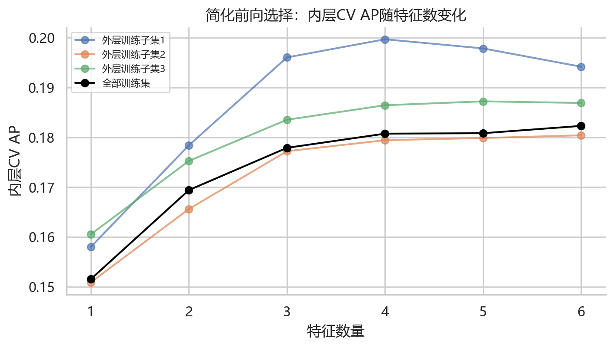

6个输入特征，无法验证患者唯一性
准确率不能单独衡量少数类识别
比较中位数插补和缺失指示变量
把模型选择留在训练集

统计分析与预测模型的区别
Table 1与Mann-Whitney U检验描述组间差异；完整病例多因素逻辑回归报告每增加一个IQR的OR和95% CI。预测模型使用正则化、CV和缺失插补，重点评价样本外预测。两者的系数均不代表因果效应。
同时看区分度、概率误差与分类代价
测试集共2,652条记录，156例死亡。表中灵敏度和特异度对应训练OOF确定的工作点，AP为平均精确率。高亮模型由训练CV选择。
| 模型 | AUROC [95% CI] | AP [95% CI] | Brier [95% CI] | 灵敏度 | 特异度 |
|---|---|---|---|---|---|
| 无信息基线 | 0.500 [—] | 0.059 [—] | 0.055 [—] | 0.000 | 1.000 |
| 普通 LR | 0.690 [0.642, 0.740] | 0.182 [0.139, 0.246] | 0.052 [0.050, 0.054] | 0.699 | 0.494 |
| 平衡权重 LR | 0.688 [0.639, 0.738] | 0.181 [0.140, 0.247] | 0.199 [0.194, 0.205] | 0.673 | 0.498 |
| LR + 缺失指示 | 0.691 [0.642, 0.741] | 0.183 [0.140, 0.247] | 0.052 [0.050, 0.054] | 0.763 | 0.410 |
| RF + 缺失指示 | 0.724 [0.681, 0.768] | 0.228 [0.171, 0.297] | 0.051 [0.049, 0.053] | 0.788 | 0.481 |
| RF 无指示 | 0.713 [0.669, 0.757] | 0.220 [0.166, 0.291] | 0.051 [0.049, 0.053] | 0.763 | 0.476 |
CI按测试记录分层bootstrap，固定已训练模型，不包含训练、参数搜索或患者聚类的不确定性。


同参数消融与校准回归
主模型减去各对照的配对差值如下。所有模型共用 1,000 次分层重采样索引。同参数随机森林消融的三个区间均跨零，缺失指示的额外贡献较小且不确定。相对普通 LR，排序能力有所提高，Brier 绝对值仅略有改善。
| 对照 | ΔAUROC [95% CI] | ΔAP [95% CI] | ΔBrier [95% CI] |
|---|---|---|---|
| RF 无指示 | 0.0114 [-0.0015, 0.0232] | 0.0078 [-0.0066, 0.0175] | -0.0002 [-0.0005, 0.0002] |
| 普通 LR | 0.0347 [0.0060, 0.0643] | 0.0452 [0.0106, 0.0790] | -0.0013 [-0.0024, -0.0002] |
测试集校准截距与斜率
| 模型 | 截距 [95% CI] | 斜率 [95% CI] |
|---|---|---|
| 普通 LR | -0.004 [-0.519, 0.512] | 0.988 [0.799, 1.177] |
| 平衡权重 LR | -2.736 [-2.906, -2.566] | 0.839 [0.676, 1.002] |
| LR + 缺失指示 | 0.005 [-0.515, 0.525] | 0.990 [0.800, 1.181] |
| RF + 缺失指示 | -0.132 [-0.581, 0.317] | 0.931 [0.763, 1.099] |

阈值降低之后，漏判和误报如何变化？
调整滑块可查看主模型在测试集上的汇总权衡。正式报告的阈值 0.0352 已由训练OOF冻结；这里的交互用于读图，不重新选择模型工作点。
仅含阈值对应的汇总计数。无患者记录、无文件上传、无在线临床预测。
解释模型使用了什么信息
主模型采用测试集置换重要性，以 AP 降幅和配对 bootstrap 区间评价输入依赖。课程参考保留平衡权重 LR 的 SHAP，背景来自训练集。两者首位变量均为 lab_5257_min。匿名变量的生理含义未知。

简化特征选择与敏感性结果
在六变量范围内，使用外层3折、内层3折的前向选择；该补充实验不等同于原论文的397特征集成排序。最终训练集选择6项特征，测试AP=0.182。

从原始教学表重现全部结果
下载项目代码，将教师提供的同版本Excel放在代码目录。完整交付包中的已运行Notebook保留了图表和输出，软件版本固定在requirements中。
结果的适用范围
- 缺少患者ID，无法验证患者独立性。
- 缺少时间，无法核验前24小时采集窗口。
- 缺少实验室名称、单位和上游选特征记录。
- 单次随机内部验证，尚无外部或临床验证。
数据版本 SHA256：77bebefce09b2127a79a09c4c0fbf8346a60ab3d870ad25f8dff3a2d6025444b